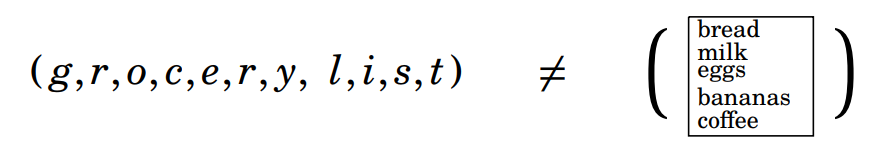
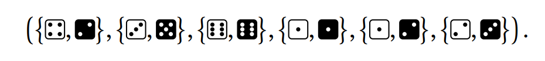

It may seem peculiar that a college-level text has a chapter on counting. At its most basic level, counting is a process of pointing to each object in a collection and calling off “one, two, three,…” until the quantity of objects is determined. How complex could that be? Actually, counting can become quite subtle, and in this chapter we explore some of its more sophisticated aspects. Our goal is still to answer the question “How many?” but we introduce mathematical techniques that bypass the actual process of counting individual objects. Sets play a big role in our discussions because the things we need to count are often naturally grouped together into a set. The concept of a list is also extremely useful.
3.1 Lists¶
A list is an ordered sequence of objects. A list is denoted by an opening parenthesis, followed by the objects, separated by commas, followed by a closing parenthesis. For example \(( a , b , c , d , e )\) is a list consisting of the first five letters of the English alphabet, in order. The objects \(a , b , c , d , e\) are called the entries of the list; the first entry is \(a\), the second is \(b\), and so on. If the entries are rearranged we get a different list, so, for instance,
A list is somewhat like a set, but instead of being a mere collection of objects, the entries of a list have a definite order. For sets we have
but—as noted above—the analogous equality for lists does not hold.
Unlike sets, lists can have repeated entries. Thus \((5,3,5,4,3,3)\) is a perfectly acceptable list, as is \(( S , O , S )\). The length of a list is its number of entries. So \((5,3,5,4,3,3)\) has length six, and \(( S , O , S )\) has length three.
For more examples, \(( a , 1 5 )\) is a list of length two. And \((0, (0, 1, 1))\) is a list of length two whose second entry is a list of length three. Two lists are equal if they have exactly the same entries in exactly the same positions. Thus equal lists have the same number of entries. If two lists have different lengths, then they can not be equal. Thus \(( 0 , 0 , 0 , 0 , 0 , 0 ) \neq ( 0 , 0 , 0 , 0 , 0 )\). Also
{kind=link}

because the list on the left has length eleven but the list on the right has just one entry (a piece of paper with some words on it).
There is one very special list which has no entries at all. It is called the empty list and is denoted \(( )\). It is the only list whose length is zero.
For brevity we often write lists without parentheses, or even commas. For instance, we may write \(( S , O , S )\) as SOS if there is no risk of confusion. But be alert that doing this can lead to ambiguity: writing \((9,10,11)\) as \(9 \ 10 \ 11\) may cause us to confuse it with \((9,1,0,1,1)\). Here it’s best to retain the parenthesis/comma notation or at least write the list as \(9,10,11\). A list of symbols written without parentheses and commas is called a string. The process of tossing a coin ten times may be described by a string such as \(HHTHTTTHHT\). Tossing it twice could lead to any of the outcomes \(HH\), \(HT\), \(TH\) or \(TT\). Tossing it zero times is described by the empty list \(( )\). Imagine rolling a dice five times and recording the outcomes. This might be described by the list (⚂,⚄,⚂,⚀,⚅), meaning that you rolled ⚂ first, then ⚄, then ⚂, etc. We might abbreviate this list as ⚂⚄⚂⚀⚅, or 3, 5, 3, 1, 6. Now imagine rolling a pair of dice, one white and one black. A typical outcome might be modeled as a set like {⚃,⚁}. Rolling the pair six times might be described with a list of six such outcomes:
{kind=link}

We might abbreviate this list as ⚃⚁ , ⚂⚄ , ⚅⚅ , ⚀⚀ , ⚀⚁ , ⚁⚂.
We study lists because many real-world phenomena can be described and understood in terms of them. Your phone number can be identified as a list of ten digits. (Order is essential, for rearranging the digits can produce a different phone number.) A byte is another important example of a list. A byte is simply a length-eight list of 0’s and 1’s. The world of information technology revolves around bytes. And the examples above show that multi-step processes (such as rolling a dice twice) can be modeled as lists. We now explore methods of counting or enumerating lists and processes.